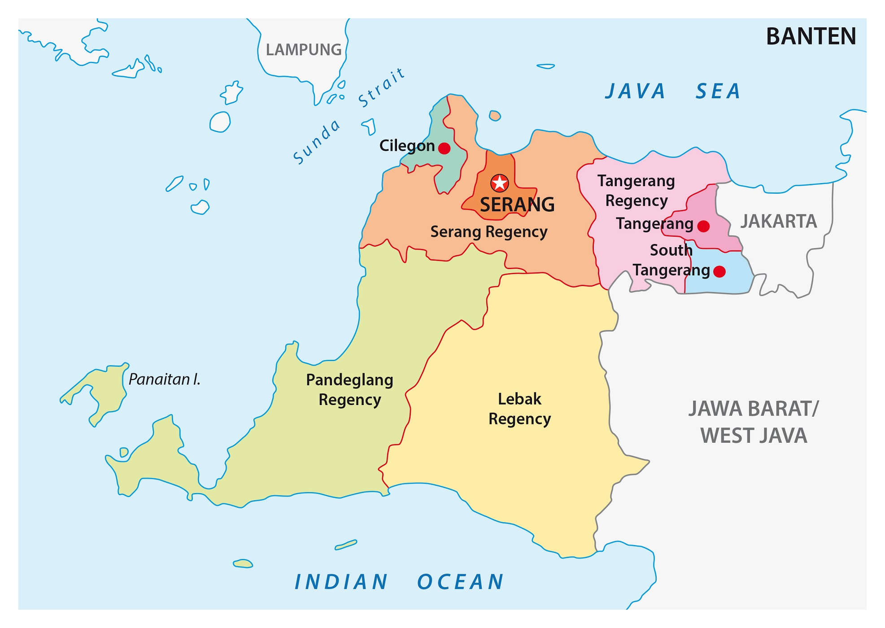
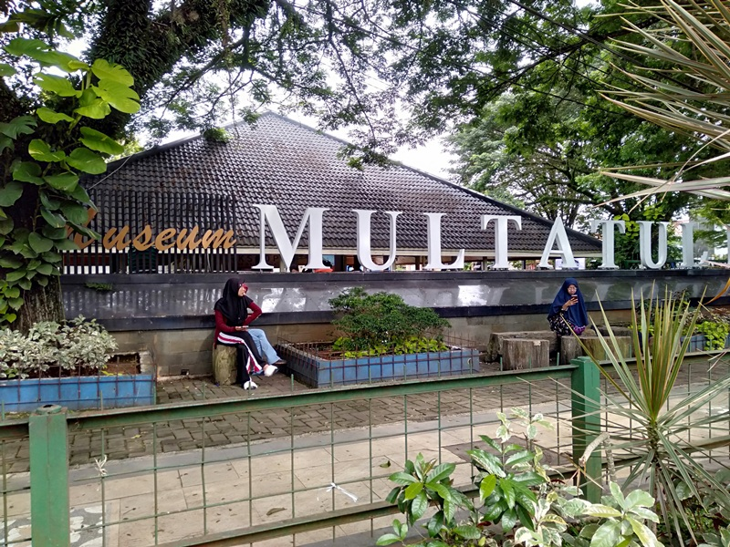
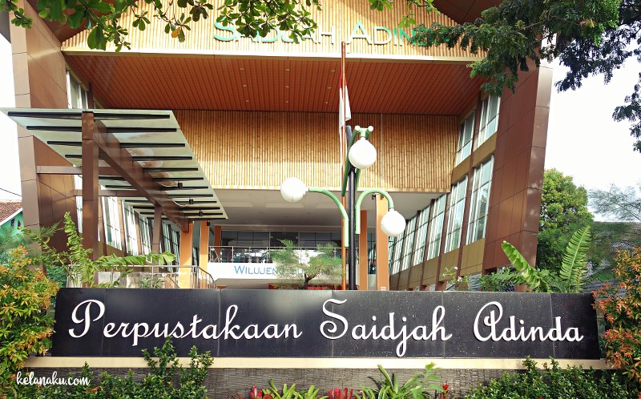

Banten

Sebuah provinsi yang terletak di pulau jawa, tepatnya paling barat pulau jawa. Dulunya Banten termasuk kedalam Provinsi Jawa Barat, namun pada akhir tahun 99' Banten memisahkan diri dan menjadi provinsi yang berdiri sendiri,tata letak yang strategis menjadikan Banten sebagai tempat persinggahan pertama bangsa Belanda di pulau jawa pada awal zaman kolonial.
Bahasa yang digunakan Masyarakat Banten secara umum ada 3, untuk wilayah selatan dan barat Banten masyarakat biasanya menggunakan bahasa sunda, untuk masyarakat yang berada di wilayah utara menggunakan bahasa Jawa Serang (jaseng) dan untuk masyarakat yang berada di wilayah timur menggunakan bahasa betawi atau bahasa gaul jakarta. Maka dari itu, budaya yang ada di Banten khususnya bahasa masih mengikuti wilayah terdekatnya yaitu Suku Sunda, Suku Jawa dan Suku Betawi.
Lokasi

Secara geografis posisi Banten terletak di ujung barat pulau jawa, maka dari itu sangat berbatasan dengan pulau sumatera dan menjadikannya sebagai jalur transit antar pulau, melalui pelabuhan merak yang ada di Banten, bisa juga ditempuh melalui jalur udara yang akan mendarat di Bandar Udara Soekarno-Hatta. Ayo kunjungi Banten!
Banten sendiri mempunyai beberapa kota dan kabupaten, ibukota Banten yakni Serang. Beberapa kota yang ada di Banten yaitu Kota Serang, Kota Cilegon, Kota Tangerang, Kota Tangerang Selatan dan untuk kabupaten yaitu Kabupaten Lebak, Kabupaten Pandeglang, Kabupaten Serang, Kabupaten Tangerang. Untuk penulis sendiri berlokasi di Kabupaten Lebak, tepatnya di Rangkasbitung.
Lebak
Kabupaten Lebak merupakan kabupaten yang ada di Banten. Terletak ditengah-tengah Banten hingga ke selatan, di kabupaten ini ada beberapa kecamatan, namun kecamatan yang penduduknya paling banyak ada di Kecamatan Rangkasbitung. Kenapa penduduknya bisa banyak? karena kecamatan ini menjadi jalur transit kereta listrik dari Tanah Abang dan jalur kereta api hingga Pelabuhan Merak. Sejak dahulu Rangkasbitung juga menjadi tempat transit menggunakan perahu di Sungai Ciujung yang menjadi hulu Sungai Ciberang dan Sungai Ciujung.
Museum Multatuli

Rangkasbitung mempunyai tempat yang wajib untuk anda kunjungi yaitu Museum Multatuli, di museum ini teman-teman bisa mengetahui sejarah yang ada di Kabupaten Lebak, jika teman-teman mengenal tokoh yang bernama Dawes Deker, beliau bertempat tinggal di Rangkasbitung dan rumahnya dahulu ada di belakang RSUD Adjidarmo.
Perpustakaan Saija Adinda

Jika anda yang hobi membaca buku, bisa juga mengunjungi Perpustakaan Saija Adinda yang lokasi bersebelahan dengan Museum Multatuli dan Alun-Alun Rangkasbitung. Di museum ini tidak ada dijadikan tempat untuk sarana edukasi tapi juga bisa dapat menjadi tempat untuk rekreasi, dengan teras dan kantin yang luas, ditambah dengan lokasinya yang asri dan terdapat tempat untuk rekreasi keluarga juga. Terdapat juga jalur untuk pengunjung yang mempunyai keterbatasan fisik atau disabilitas.